HMW: Help NU Votes Ambassadors to streamline and disseminate political information in order to engage and inform curious NU students?
Overview
PolitiChat by NU Votes tackles the voting problem in the younger generation, specifically at Northwestern University. It is a messaging service that connects politically curious students with informed peers, NU Votes Ambassadors, in a convenient and comfortable way.
Project Details
Tools:
Figma
Partner:
NU Votes, an initiative at Northwestern University Center for Civic Engagement
Timeline:
January - March 2020
Location:
Northwestern University, Evanston, IL
Team of:
3
1. Initial Research
At the beginning of this project, I was constrained because I am an international student who did not know much about the US voting system. Thus, my initial step was to research the voting system and elections.
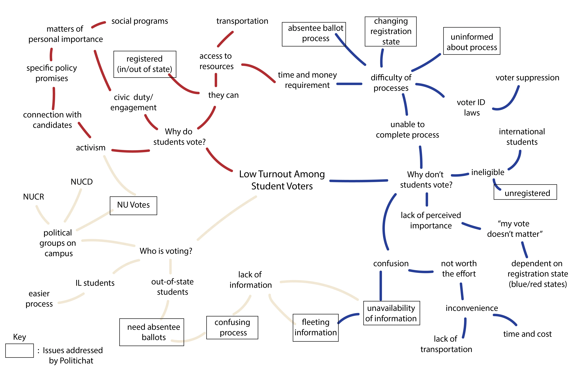
2. Stakeholder Map
I created a stakeholder map to explore possible factors in the low student participation rate, listed all my questions, and searched for answers. Comparing my map to my teammates’, we merged our ideas together in a new stakeholder map.
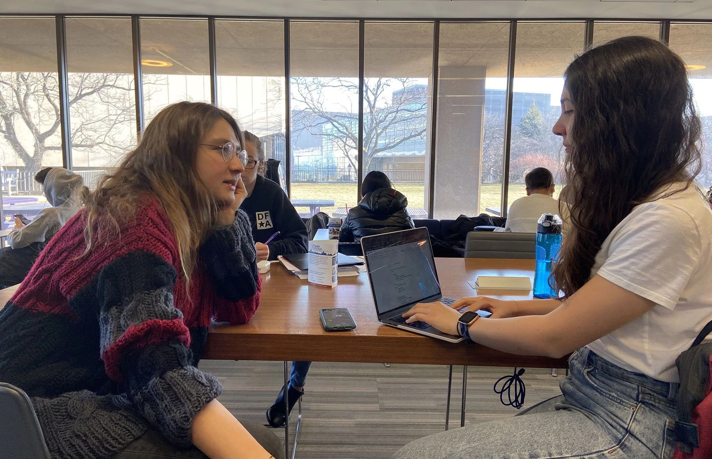
3. Interviews
We interviewed students from various majors and backgrounds to understand the different approaches to voting and motivations to participate. Being an international student myself, I mainly interviewed students who weren’t authorized to participate in US elections to learn how they were being affected.
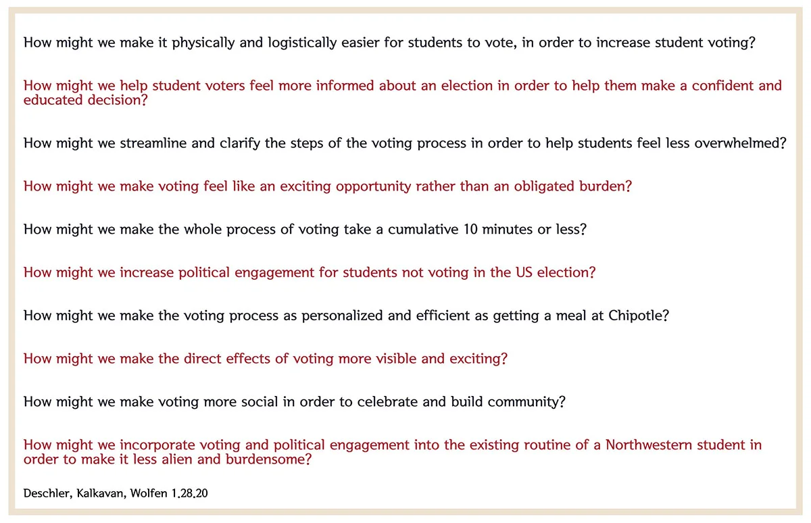
4. How Might We
We generated “How Might We” questions to differentiate the subjects we could focus on, to investigate different aspects of the problem and to decide on the solution methods to implement.
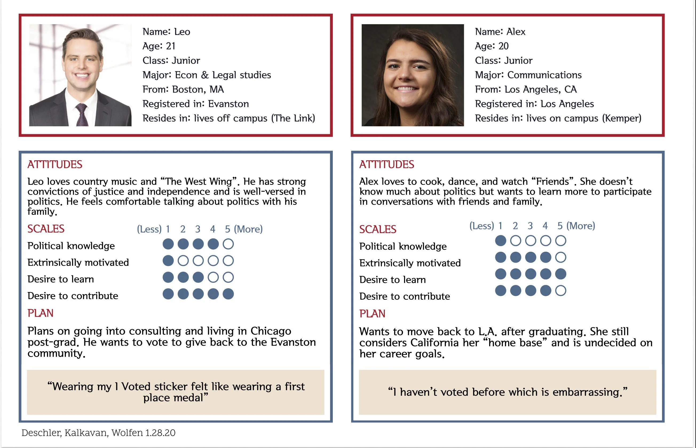
5. Personas
We compiled our interview notes, and created two personas that reflected the interviewees.
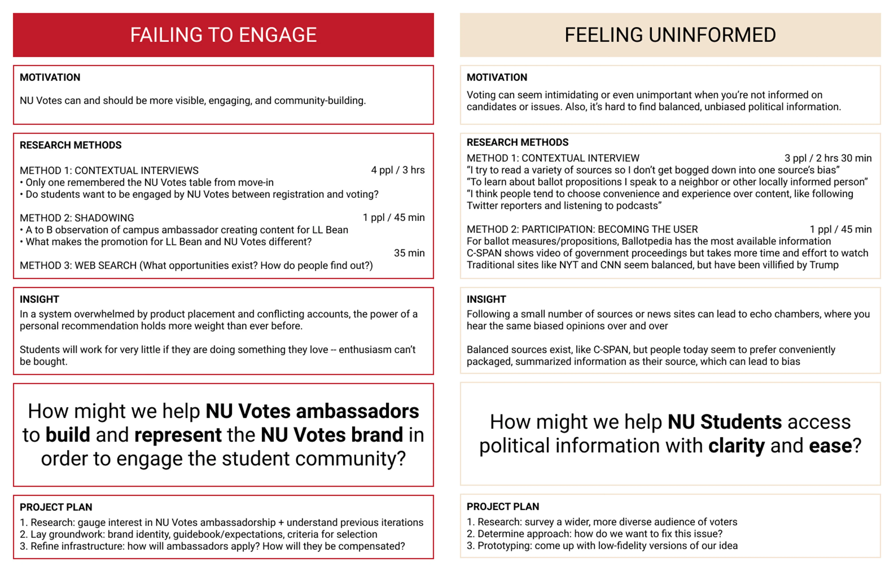
6. Synthesis Framework
After deciding on our focus group to consist of only US citizens, we moved forward with the 3 most powerful How Might We questions.
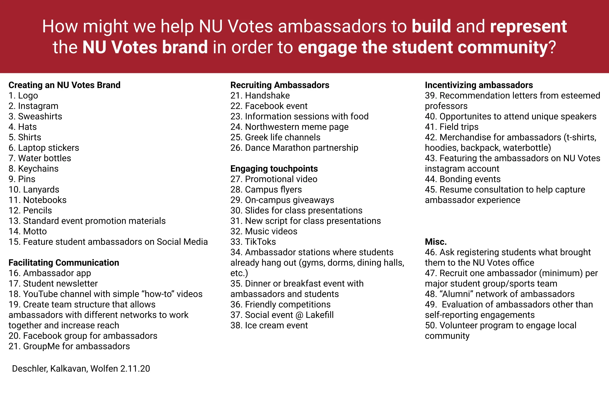
7. Ideation
We generated at least 50 possible solutions for each of the 3 problem areas we had decided to focus on. Upon feedback from users, NU Votes staff, and ambassadors about which features were feasible and which parts we had to rethink, we chose 3 ideas that seemed the most exciting to us.
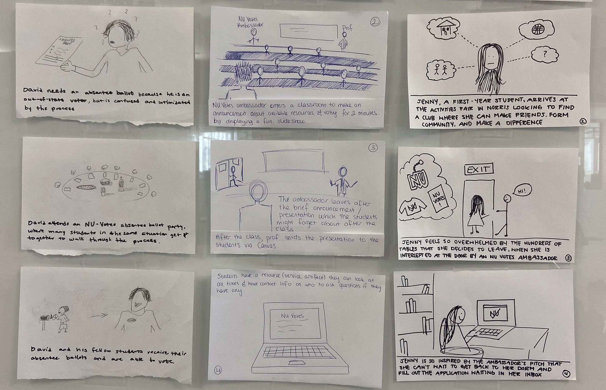
8. Storyboards
We created storyboards to display 3 different scenarios where we could reach students, inform and engage them.
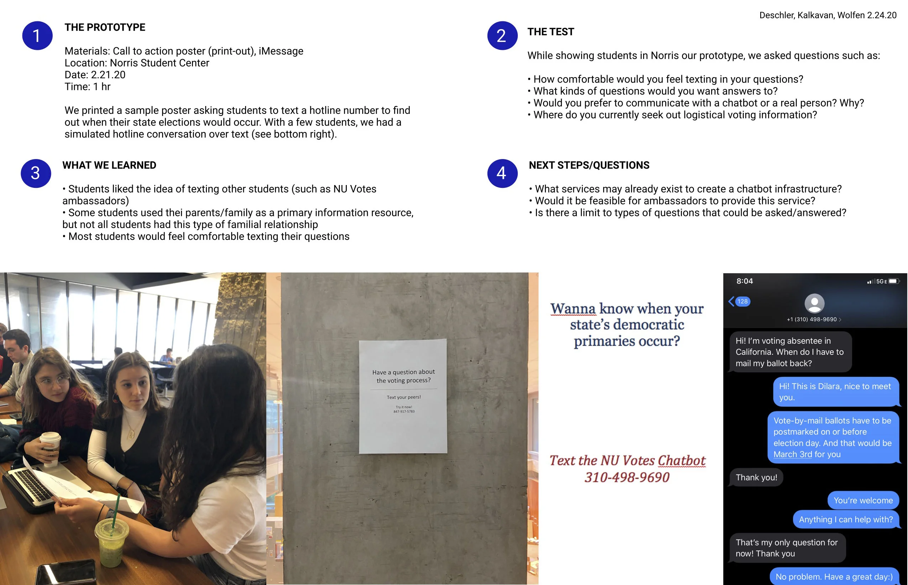
9. Build & Test Round 1
Prototype 1
We created 3 prototypes, one of which is displayed on this slide, second one displayed on the following slide. These prototypes were created to inspect how many students would use a texting service where they can ask questions to an informed student ambassador. In addition, we tested how many students would interact with a QR code, which would take them to websites where they can check where they are registered.
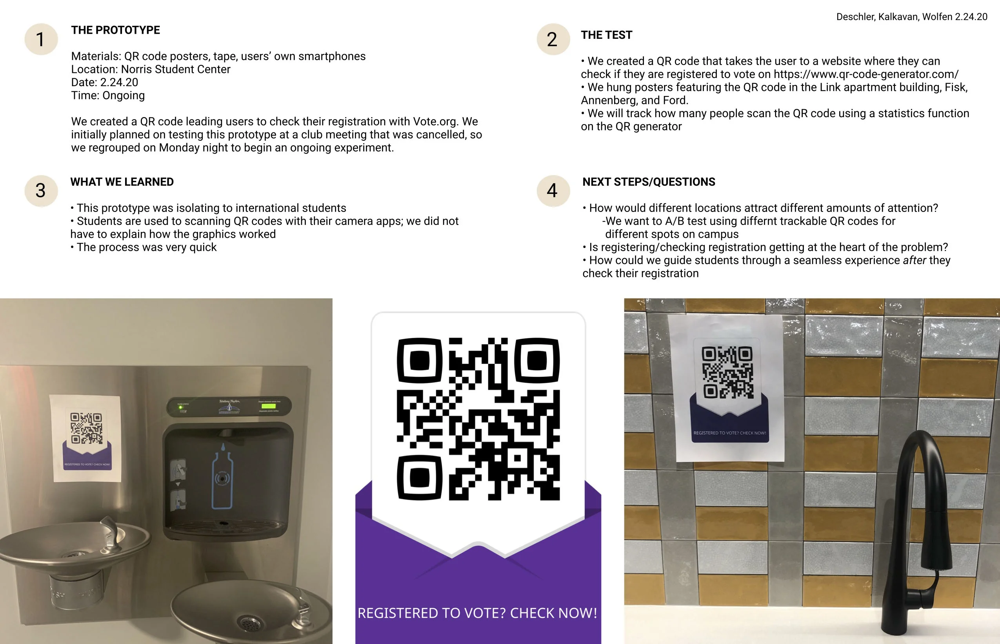
10. Build & Test Round 1
Prototype 2
We found out that students feel more comfortable asking their questions to their peers. In addition, students found the QR code a quick way to engage in a service. Combining the two ideas, we created a QR code that prompts the texting service on users’ phones.
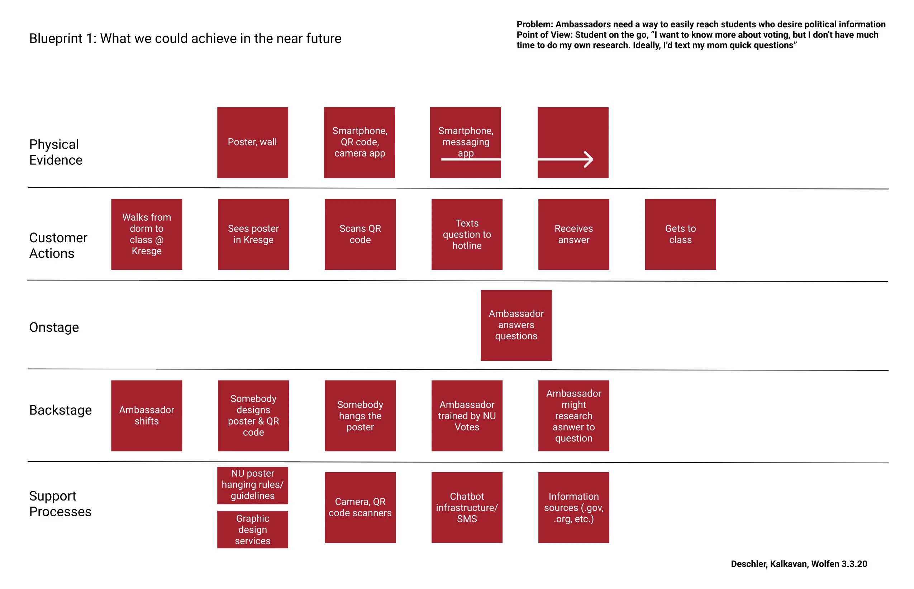
11. Service Blueprints
We created 3 blueprints that represent "Step, Stretch and Leap" in other words, what we can achieve in the near future, in a few months and in a few years.
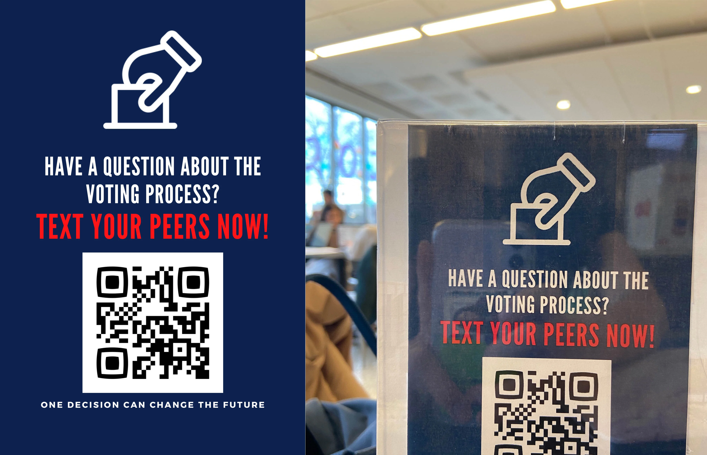
12. Build & Test Round 2
I designed a table tent prototype to be placed on the tables in Northwestern University's student center. Through an online QR code service, the code directed the users to the NU Votes Ambassador hotline. Ambassadors were able to respond to the users’ questions.
Result
We presented our idea to our client, gave a presentation including a one-minute promotional video of the product.
Reflection
I learned that students are more willing to engage with their peers than professionals. I also learned the importance of prototyping earlier, of communicating frequently with the client and users, and the importance of considering how a product could work as well as how it could fail to work.